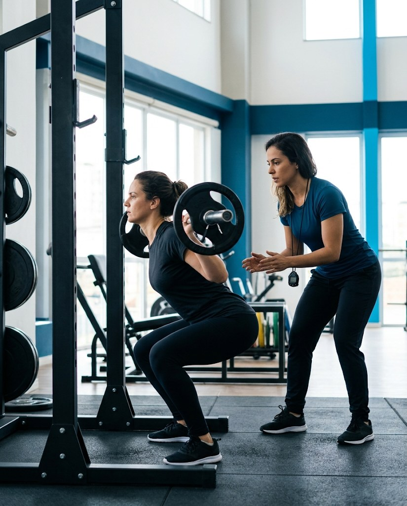

Quem está começando
Adultos sem experiência em musculação que querem começar com segurança e acompanhamento.
One to One · Musculação e condicionamento
Musculação e condicionamento físico personalizados para adultos que buscam saúde, força e qualidade de vida — em qualquer fase da vida.

Público-alvo
Adultos sem experiência em musculação que querem começar com segurança e acompanhamento.
Praticantes que buscam evoluir com um treino planejado e ajustado ao seu objetivo.
Pessoas de 17 a 90 anos que querem mais força, disposição e autonomia no dia a dia.
Onde começamos
A One to One surgiu em 2019, quando pais dos atletas da PKZ começaram a pedir um treino para eles também. A equipe adaptou a metodologia da PKZ para adultos e criou um programa de musculação e condicionamento com acompanhamento individual, para quem tem de 17 a 90 anos.
Nosso foco
Treino convencional bem feito: musculação e condicionamento individualizados, com atenção próxima do treinador em cada sessão.
Metodologia
A mesma metodologia da PKZ One to One, aplicada às necessidades de quem treina aqui.
Conversa sobre objetivo, rotina e histórico, e avaliação física para definir o ponto de partida.
Plano de musculação e condicionamento montado para o seu objetivo.
O treinador registra dor, foco e intensidade e ajusta a carga para o próximo treino.
Você acompanha a sua evolução física ao longo do tempo.
Agende uma aula experimental e conheça a estrutura e a equipe.